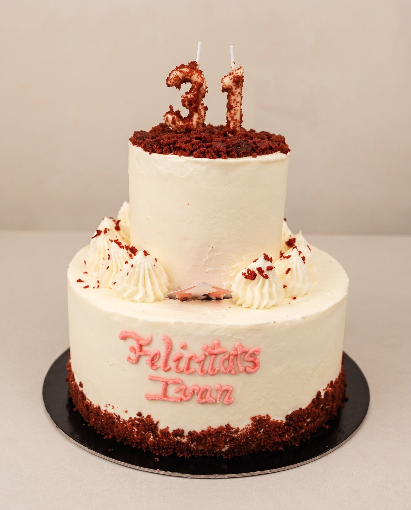
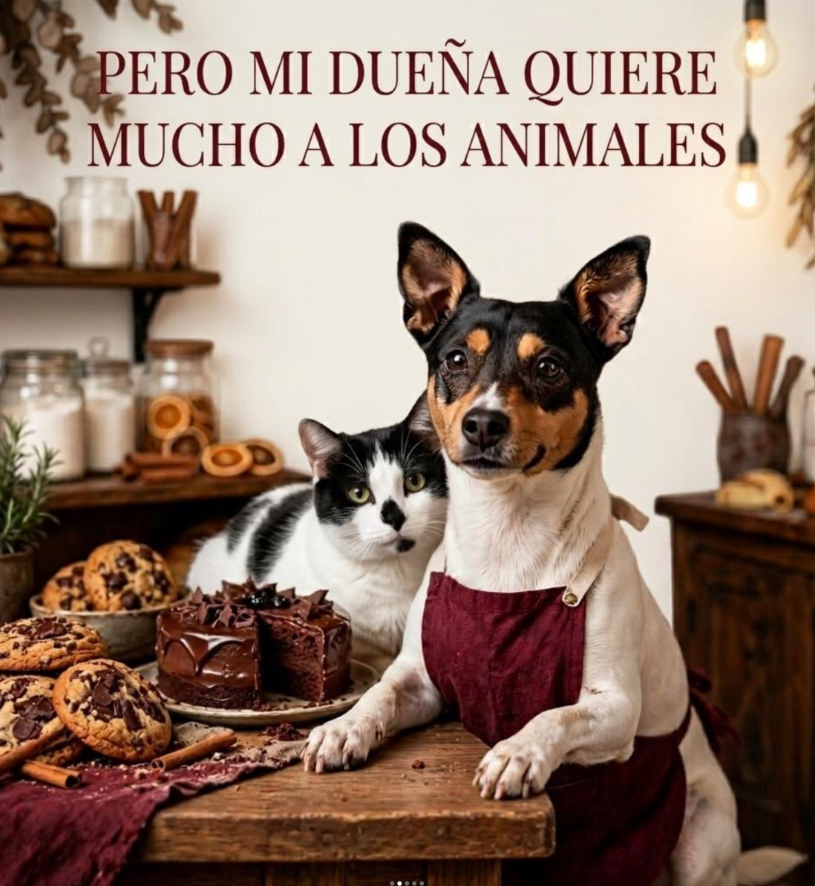
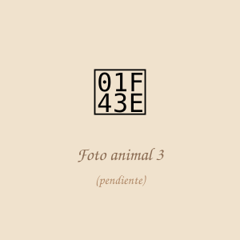

Tarta de queso
La de toda la vida, cremosa y al horno · 10 personas.
26 €
PastelerÃa artesanal en Blanes. Huele a recién horneado desde aquÃ. ðŸž
Las tres que salen cada semana del obrador. Las que nunca fallan.
La de toda la vida, cremosa y al horno · 10 personas.

La foto que quieras, impresa sobre la tarta.

Tus fotos en carrete alrededor · 10 personas.


Fotos, precios y el comentario de cada tarta están en el catálogo completo. ¡Y con extras: velitas, mensajes, fresas…!

Soy pastelera desde los 16 años. Hoy, con 33, llevo 17 años dedicándome a lo que más me apasiona.
Tengo titulación en pastelerÃa y a lo largo de mi trayectoria he sido reconocida con varios premios, pero lo que de verdad me define no son los tÃtulos: es la forma en la que trabajo.
Yo no hago tartas.
Hago Martartas.
Cada una la creo con amor, pasión e implicación, cuidando cada detalle desde el primer ingrediente hasta el último toque, para que no sea solo un dulce, sino un momento especial que se recuerde.
"La tarta de queso desapareció en diez minutos. Diez."
"Encargo fácil por WhatsApp y recogida puntual. Repetiré seguro."
"Nos hizo la tarta de cumpleaños y quedó preciosa. Y buenÃsima."
Fácil y como mejor te venga. Tres formas:
Me escribes, confirmamos la tarta y listo. El pedido va directo al chat.
Empezar chatAl confirmar el pedido te paso el número de Bizum y me llegará al momento.
Se da por WhatsAppSi prefieres lo clásico: pagas en el obrador cuando recoges tu tarta.
En el obrador
Para las tartas del catálogo, con 3-5 dÃas va bien. Para personalizadas, mejor una semana: asà la preparamos con calma.
Depende de la tarta: algunas se adaptan sin problema. Cuéntame qué necesitas por WhatsApp y te digo qué opciones hay.
De dos formas: Bizum al confirmar el pedido, o efectivo al recogerlo en Blanes.
En Blanes. La recogida es de miércoles a domingo, de 9:00 a 17:00. Al confirmar te digo el punto exacto.
¡SÃ! Cuéntame la ocasión, la fecha y cuántos sois, y preparamos algo a medida. Empieza por la tarjeta «Tú la imaginas, yo la horneo».
Según la zona y el tamaño del pedido se puede mirar. Consúltalo por WhatsApp y lo vemos.
Solo online. Estamos en Blanes.
Recogida de pedidos: miércoles a domingo, de 9:00 a 17:00.
Déjame tu email y te aviso de novedades y tartas de temporada.